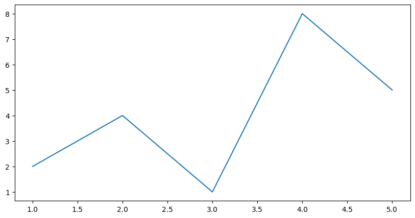
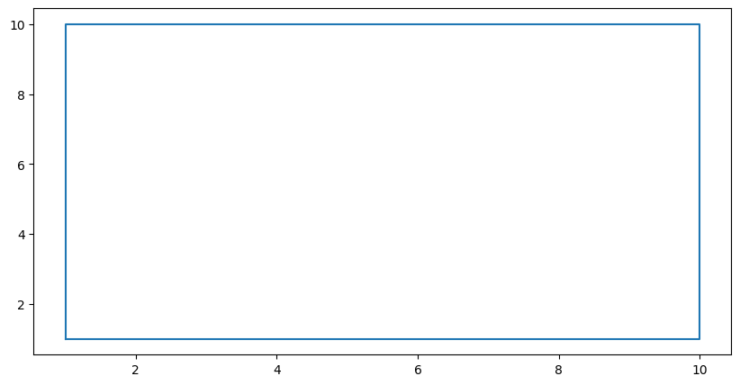
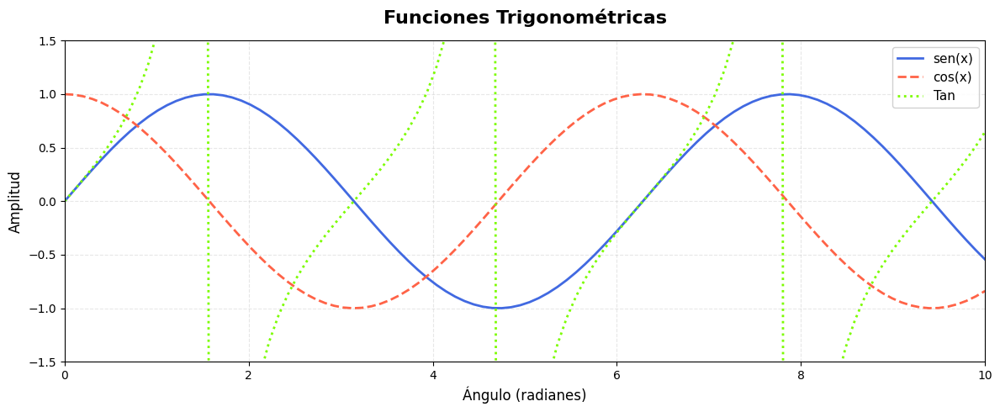
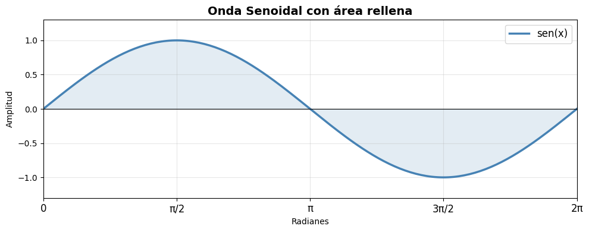
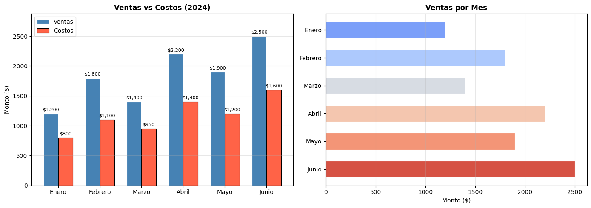
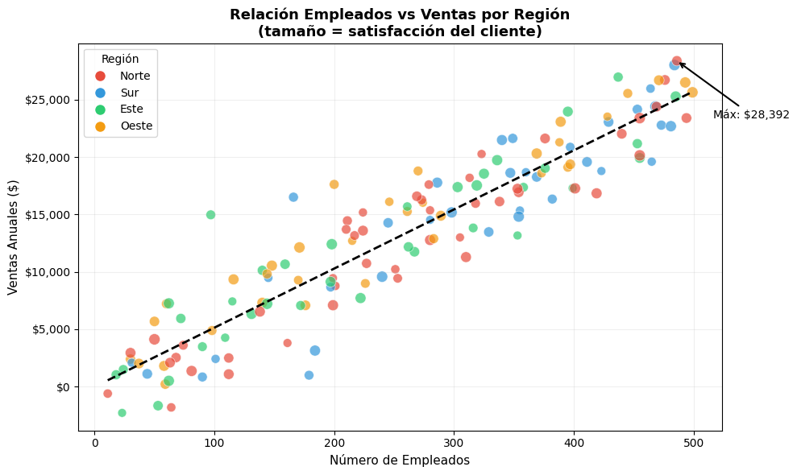
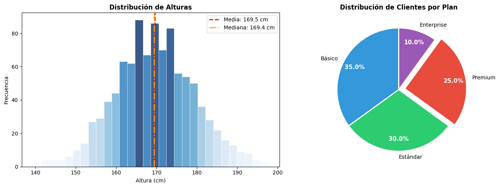

1.3.2 Matplotlib — Fundamentos#
Matplotlib es la biblioteca madre de visualización en Python. Fue creada en 2003 por John Hunter y está inspirada en MATLAB. Todo en Python de visualización (Seaborn, Pandas plots, etc.) está construido sobre ella.
1.1 La arquitectura de Matplotlib#
Matplotlib tiene una jerarquía de objetos:
Figure (el lienzo completo — como una hoja de papel)
└── Axes (el área donde se dibuja — los ejes X e Y)
├── Axis (el eje en sí: X o Y con sus ticks)
├── Line2D (líneas del gráfico)
├── Text (títulos, etiquetas)
└── Patch (rectángulos, círculos, áreas)
Entender esto es clave: siempre trabajas con una Figure que contiene uno o más Axes.
# ══════════════════════════════════════════════
# IMPORTACIONES FUNDAMENTALES
# ══════════════════════════════════════════════
import matplotlib.pyplot as plt
# matplotlib → el paquete completo
# .pyplot → submódulo con la interfaz de alto nivel (estilo MATLAB)
# as plt → alias estándar en TODO el ecosistema Python
import numpy as np
# numpy → biblioteca de arrays numéricos de alta performance
# as np → alias estándar universal
import pandas as pd
# pandas → tablas de datos (DataFrames), muy útil con Matplotlib
# as pd → alias estándar
# Esta línea configura el tamaño predeterminado de TODAS las figuras
# [ancho, alto] en pulgadas — 1 pulgada ≈ 100 píxeles en pantalla
plt.rcParams['figure.figsize'] = [10, 5]
# Activa el renderizado de alta resolución en Jupyter
# %matplotlib inline # ← descomenta si usas Jupyter clásico
print(f'Matplotlib versión: {plt.matplotlib.__version__}')
print(f'NumPy versión: {np.__version__}')
Matplotlib versión: 3.10.0
NumPy versión: 2.0.2
1.2 Tu primer gráfico — paso a paso#
# ══════════════════════════════════════════════
# GRÁFICO MÁS SIMPLE POSIBLE
# ══════════════════════════════════════════════
# Paso 1: Crear datos
x = [1, 2, 3, 4, 5] # Lista normal de Python — eje X
y = [2, 4, 1, 8, 5] # Lista normal de Python — eje Y
# Paso 2: Llamar a plt.plot()
# plot(x, y) dibuja una línea conectando los puntos (x[0],y[0]), (x[1],y[1])...
plt.plot(x, y)
# Paso 3: Mostrar el gráfico
# En Jupyter se muestra automáticamente al final de la celda
# En scripts .py NECESITAS llamar plt.show() obligatoriamente
plt.show()

# ══════════════════════════════════════════════
# GRÁFICO MÁS SIMPLE POSIBLE
# ══════════════════════════════════════════════
# Paso 1: Crear datos
x = [1, 1,10,10,1] # Lista normal de Python — eje X
y = [1, 10,10,1,1] # Lista normal de Python — eje Y
# Paso 2: Llamar a plt.plot()
# plot(x, y) dibuja una línea conectando los puntos (x[0],y[0]), (x[1],y[1])...
plt.plot(x, y)
# Paso 3: Mostrar el gráfico
# En Jupyter se muestra automáticamente al final de la celda
# En scripts .py NECESITAS llamar plt.show() obligatoriamente
plt.show()

# ══════════════════════════════════════════════
# GRÁFICO CON TODOS LOS ELEMENTOS BÁSICOS
# ══════════════════════════════════════════════
# --- Generación de datos con NumPy ---
x = np.linspace(0, 10, 100)
# np.linspace(inicio, fin, cantidad_de_puntos)
# Genera 100 números IGUALMENTE ESPACIADOS entre 0 y 10
# Resultado: [0.0, 0.101, 0.202, ..., 10.0]
y_seno = np.sin(x) # sin() de cada elemento del array x
y_coseno = np.cos(x) # cos() de cada elemento del array x
y_tan=np.tan(x)
# --- Creación de la figura ---
plt.figure(figsize=(12, 5))
# figure() → crea una nueva figura vacía (el "lienzo")
# figsize → (ancho, alto) en pulgadas
# Si no llamas figure(), plt usa la figura anterior o crea una automáticamente
# --- Trazado de líneas ---
plt.plot(x, y_seno,
color='royalblue', # color de la línea (nombre, hex '#1234ab', o RGB)
linewidth=2, # grosor de la línea en puntos
linestyle='-', # estilo: '-' sólida, '--' discontinua, ':' punteada, '-.' punto-raya
label='sen(x)') # etiqueta para la leyenda
plt.plot(x, y_coseno,
color='tomato',
linewidth=2,
linestyle='--',
label='cos(x)')
plt.plot(x, y_tan,
color='lawngreen',
linewidth=2,
linestyle=':',
label='Tan')
# --- Etiquetas y título ---
plt.title('Funciones Trigonométricas',
fontsize=16, # tamaño de fuente en puntos
fontweight='bold', # grosor: 'normal', 'bold'
pad=15) # espacio entre el título y el gráfico (puntos)
plt.xlabel('Ángulo (radianes)',
fontsize=12) # etiqueta del eje X
plt.ylabel('Amplitud',
fontsize=12) # etiqueta del eje Y
# --- Leyenda ---
plt.legend(
loc='upper right', # ubicación: 'best', 'upper left/right', 'lower left/right', 'center'
fontsize=11,
framealpha=0.9) # transparencia del fondo de la leyenda (0=transparente, 1=sólido)
# --- Cuadrícula ---
plt.grid(
True, # True = activar, False = desactivar
alpha=0.3, # transparencia de las líneas de la cuadrícula
linestyle='--') # estilo de las líneas de la cuadrícula
# --- Límites de los ejes ---
plt.xlim(0, 10) # rango del eje X: de 0 a 10
plt.ylim(-1.5, 1.5) # rango del eje Y: de -1.5 a 1.5
plt.tight_layout() # ajusta automáticamente los márgenes para que nada se corte
plt.show()

1.3 La interfaz orientada a objetos (recomendada)#
Hay dos formas de usar Matplotlib:
Interfaz |
Sintaxis |
Cuándo usarla |
|---|---|---|
pyplot (implícita) |
|
Scripts rápidos, exploración |
OO (orientada a objetos) |
|
Producción, múltiples gráficos, mayor control |
# ══════════════════════════════════════════════
# INTERFAZ ORIENTADA A OBJETOS (forma profesional)
# ══════════════════════════════════════════════
x = np.linspace(0, 2 * np.pi, 200)
# np.pi → el número π (3.14159...)
# 2*π → una vuelta completa en radianes
# 200 → 200 puntos para una curva muy suave
# plt.subplots() hace DOS cosas a la vez:
# 1. Crea una Figure (fig) — el contenedor de todo
# 2. Crea un Axes (ax) — el área de dibujo con sus ejes
# Retorna una tupla (fig, ax) que desempacamos
fig, ax = plt.subplots(figsize=(10, 4))
# A partir de aquí todo se llama SOBRE ax, no sobre plt
# ax.plot() en lugar de plt.plot()
# ax.set_title() en lugar de plt.title() ← nota el 'set_'
line, = ax.plot(x, np.sin(x),
color='steelblue',
linewidth=2.5,
label='sen(x)')
# line, → la coma desempaca la lista que retorna plot()
# 'line' es ahora un objeto Line2D que puedes modificar después
# Rellenar el área bajo la curva
ax.fill_between(
x, # eje X
np.sin(x), # límite superior del relleno
0, # límite inferior del relleno (el eje X)
alpha=0.15, # transparencia del relleno
color='steelblue')
# Con la interfaz OO usamos set_* para configurar propiedades
ax.set_title('Onda Senoidal con área rellena', fontsize=14, fontweight='bold')
ax.set_xlabel('Radianes')
ax.set_ylabel('Amplitud')
ax.set_xlim(0, 2 * np.pi)
ax.set_ylim(-1.3, 1.3)
# Personalizar los ticks (marcas) del eje X
ax.set_xticks([0, np.pi/2, np.pi, 3*np.pi/2, 2*np.pi])
# set_xticks() define DÓNDE van las marcas en el eje X
ax.set_xticklabels(['0', 'π/2', 'π', '3π/2', '2π'], fontsize=12)
# set_xticklabels() define QUÉ texto se muestra en cada marca
ax.axhline(y=0, color='black', linewidth=0.8, linestyle='-')
# axhline() → dibuja una línea horizontal en y=valor específico
# Útil para marcar el cero o umbrales importantes
ax.legend(fontsize=12)
ax.grid(True, alpha=0.3)
# fig.savefig() → guarda la figura en un archivo
# fig.savefig('mi_grafico.png', dpi=150, bbox_inches='tight')
# dpi=150 → resolución (dots per inch). 72=pantalla, 150=calidad media, 300=impresión
# bbox_inches='tight' → recorta el espacio vacío alrededor
plt.tight_layout()
plt.show()

1.4 Gráfico de Barras#
# ══════════════════════════════════════════════
# GRÁFICO DE BARRAS — vertical y horizontal
# ══════════════════════════════════════════════
categorias = ['Enero', 'Febrero', 'Marzo', 'Abril', 'Mayo', 'Junio']
ventas = [1200, 1800, 1400, 2200, 1900, 2500]
costos = [800, 1100, 950, 1400, 1200, 1600]
# Creamos posiciones numéricas para las barras
x = np.arange(len(categorias))
# np.arange(n) → genera [0, 1, 2, 3, ..., n-1]
# Equivalente a range() pero retorna un array de NumPy
ancho = 0.35 # ancho de cada barra (el espacio total es 1.0)
fig, axes = plt.subplots(1, 2, figsize=(14, 5))
# subplots(filas, columnas) → crea una CUADRÍCULA de Axes
# (1, 2) → 1 fila, 2 columnas = dos gráficos lado a lado
# axes → ahora es un ARRAY de objetos Axes: axes[0] y axes[1]
# ── Gráfico izquierdo: barras verticales agrupadas ──
ax = axes[0]
bars1 = ax.bar(
x - ancho/2, # posición X de la barra (desplazada a la izquierda)
ventas, # altura de las barras
ancho, # ancho de las barras
label='Ventas',
color='steelblue',
edgecolor='white', # color del borde de cada barra
linewidth=0.8)
bars2 = ax.bar(
x + ancho/2, # posición X desplazada a la derecha
costos,
ancho,
label='Costos',
color='tomato',
edgecolor='black',
linewidth=0.8)
# Añadir etiquetas de valor encima de cada barra
def etiquetar_barras(ax, barras):
for barra in barras:
altura = barra.get_height() # obtiene el valor (altura) de la barra
ax.annotate(
f'${altura:,}', # texto a mostrar (formato con separador de miles)
xy=(barra.get_x() + barra.get_width() / 2, altura), # posición en el gráfico
xytext=(0, 3), # desplazamiento en píxeles desde xy
textcoords='offset points',
ha='center', # alineación horizontal
va='bottom', # alineación vertical
fontsize=8)
etiquetar_barras(ax, bars1)
etiquetar_barras(ax, bars2)
ax.set_title('Ventas vs Costos (2024)', fontweight='bold')
ax.set_xticks(x) # marcas en las posiciones 0,1,2,3,4,5
ax.set_xticklabels(categorias) # texto de las marcas
ax.set_ylabel('Monto ($)')
ax.legend()
ax.grid(axis='y', alpha=0.3) # grid solo en el eje Y (horizontal)
ax.set_ylim(0, max(ventas) * 1.15) # 15% de espacio arriba para las etiquetas
# ── Gráfico derecho: barras horizontales ──
ax2 = axes[1]
colores = plt.cm.coolwarm(np.linspace(0.2, 0.9, len(categorias)))
# plt.cm → módulo de mapas de color (colormaps)
# RdYlGn → colormap Rojo-Amarillo-Verde
# np.linspace() → 6 valores igualmente espaciados entre 0.2 y 0.9
# Esto asigna un color diferente a cada barra automáticamente
ax2.barh(
categorias, # eje Y (categorías)
ventas, # eje X (valores) → barras horizontales
color=colores,
edgecolor='white',
linewidth=0.8,
height=0.6) # grosor de las barras horizontales (equivalente a 'width' en bar)
ax2.set_title('Ventas por Mes', fontweight='bold')
ax2.set_xlabel('Monto ($)')
ax2.grid(axis='x', alpha=0.3)
ax2.invert_yaxis() # invertir el eje Y para que Enero quede arriba
plt.tight_layout()
plt.show()

1.5 Gráfico de Dispersión (Scatter Plot)#
# ══════════════════════════════════════════════
# SCATTER PLOT — dispersión con color y tamaño
# ══════════════════════════════════════════════
np.random.seed(42)
# random.seed(42) → fija la semilla del generador aleatorio
# Con la misma semilla, siempre obtendrás los MISMOS números aleatorios
# Fundamental para reproducibilidad científica
# El 42 no es especial, puedes usar cualquier entero
n = 150 # número de puntos
# Generamos datos simulados de una empresa: empleados, ventas, satisfacción y región
empleados = np.random.randint(10, 500, n) # enteros entre 10 y 500
ventas = empleados * 50 + np.random.randn(n) * 3000 # correlación con ruido
# np.random.randn(n) → n números con distribución normal estándar (media=0, std=1)
satisfaccion = np.random.uniform(60, 100, n) # floats entre 60 y 100
region = np.random.choice(['Norte', 'Sur', 'Este', 'Oeste'], n) # categorías
fig, ax = plt.subplots(figsize=(10, 6))
# Colores por categoría
colores_region = {'Norte': '#E74C3C', 'Sur': '#3498DB', 'Este': '#2ECC71', 'Oeste': '#F39C12'}
c = [colores_region[r] for r in region] # lista de colores correspondiente a cada punto
scatter = ax.scatter(
empleados, # posición X de cada punto
ventas, # posición Y de cada punto
c=c, # color de cada punto (lista o array)
s=satisfaccion, # TAMAÑO de cada punto (en puntos²) — representa la satisfacción
alpha=0.7, # transparencia — útil cuando los puntos se superponen
edgecolors='white', # borde blanco alrededor de cada punto
linewidths=0.5) # grosor del borde
# Línea de tendencia (regresión lineal) con NumPy
coeficientes = np.polyfit(empleados, ventas, deg=1)
# np.polyfit(x, y, grado) → ajusta un polinomio de grado 'deg'
# deg=1 → línea recta (y = mx + b)
# Retorna [pendiente m, intercepto b]
polinomio = np.poly1d(coeficientes)
# np.poly1d() → convierte los coeficientes en una función callable
# Así podemos llamar polinomio(x) para obtener y
x_linea = np.linspace(empleados.min(), empleados.max(), 100)
ax.plot(x_linea, polinomio(x_linea),
color='black', linewidth=2, linestyle='--',
label='Tendencia', zorder=5)
# zorder → orden de dibujo (mayor = encima)
# Por defecto los puntos tienen zorder=1; con 5 la línea queda encima
# Leyenda manual para las regiones
from matplotlib.lines import Line2D
legend_elements = [
Line2D([0], [0], marker='o', color='w', markerfacecolor=color,
markersize=10, label=region_nombre)
for region_nombre, color in colores_region.items()
]
# Line2D() → crea un elemento de leyenda personalizado
# marker='o' → círculo; color='w' → línea blanca (invisible)
# Este truco crea solo el marcador sin la línea
ax.legend(handles=legend_elements, title='Región', loc='upper left')
# Anotación de un punto específico
idx_max = np.argmax(ventas) # índice del valor máximo
ax.annotate(
f'Máx: ${ventas[idx_max]:,.0f}', # texto de la anotación
xy=(empleados[idx_max], ventas[idx_max]), # punto donde apunta la flecha
xytext=(empleados[idx_max] + 30, ventas[idx_max] - 5000), # posición del texto
arrowprops=dict(arrowstyle='->', color='black', lw=1.5),
# arrowstyle → estilo de flecha: '->', '<-', '<->', '-|>', etc.
fontsize=10, color='black')
ax.set_title('Relación Empleados vs Ventas por Región\n(tamaño = satisfacción del cliente)',
fontsize=13, fontweight='bold')
ax.set_xlabel('Número de Empleados', fontsize=11)
ax.set_ylabel('Ventas Anuales ($)', fontsize=11)
ax.yaxis.set_major_formatter(plt.FuncFormatter(lambda x, p: f'${x:,.0f}'))
# FuncFormatter → formatea los ticks con una función personalizada
# lambda x, p → x=valor del tick, p=posición (no se usa aquí)
# f'${x:,.0f}' → formato: $1,234,567
ax.grid(True, alpha=0.2)
plt.tight_layout()
plt.show()

1.6 Histograma y Gráfico de Pastel#
# ══════════════════════════════════════════════
# HISTOGRAMA y PIE CHART
# ══════════════════════════════════════════════
np.random.seed(0)
datos_normales = np.random.normal(loc=170, scale=10, size=1000)
# random.normal(loc, scale, size)
# loc=170 → media (valor central) — altura promedio en cm
# scale=10 → desviación estándar — cuánto varían los datos
# size=1000 → cantidad de muestras a generar
fig, (ax1, ax2) = plt.subplots(1, 2, figsize=(14, 5))
# Desempacamos directamente: ax1 y ax2
# ── Histograma ──
n_hist, bins, patches = ax1.hist(
datos_normales,
bins=30, # número de barras (bins) del histograma
# más bins = más detalle pero más ruido
color='steelblue',
edgecolor='white',
linewidth=0.5,
alpha=0.8,
density=False) # density=True normaliza a densidad de probabilidad (suma=1)
# hist() retorna 3 cosas:
# n_hist → alturas (frecuencias) de cada barra
# bins → bordes de cada bin (tiene len(n)+1 elementos)
# patches → objetos Rectangle de cada barra (para colorear individualmente)
# Colorear barras según su posición (mapa de color)
fracciones = (n_hist - n_hist.min()) / (n_hist.max() - n_hist.min())
# Normalizamos a [0, 1] para mapear colores
cmap = plt.cm.Blues
for fraccion, patch in zip(fracciones, patches):
color = cmap(fraccion) # obtiene el color del mapa para ese valor
patch.set_facecolor(color) # aplica el color a esa barra
# Línea de la media
ax1.axvline(x=datos_normales.mean(), color='red', linestyle='--',
linewidth=2, label=f'Media: {datos_normales.mean():.1f} cm')
# axvline() → línea VERTICAL en x=valor
# :.1f → formato de 1 decimal
ax1.axvline(x=np.median(datos_normales), color='orange', linestyle='-.',
linewidth=2, label=f'Mediana: {np.median(datos_normales):.1f} cm')
ax1.set_title('Distribución de Alturas', fontweight='bold')
ax1.set_xlabel('Altura (cm)')
ax1.set_ylabel('Frecuencia')
ax1.legend()
# ── Gráfico de Pastel ──
etiquetas = ['Básico', 'Estándar', 'Premium', 'Enterprise']
tamaños = [35, 30, 25, 10] # porcentajes (no necesitan sumar 100 exactamente)
colores_p = ['#3498DB', '#2ECC71', '#E74C3C', '#9B59B6']
explosiones = [0, 0, 0.1, 0]
# explode → cuánto se separa cada sector del centro
# 0.1 → el sector 'Premium' (índice 2) se separa un 10% del radio
wedges, texts, autotexts = ax2.pie(
tamaños,
labels=etiquetas,
colors=colores_p,
explode=explosiones,
autopct='%1.1f%%', # formato del porcentaje dentro de cada sector
# %1.1f → 1 dígito antes del punto, 1 decimal
startangle=90, # ángulo de inicio (90=arriba, 0=derecha)
pctdistance=0.8, # distancia del porcentaje al centro (0=centro, 1=borde)
wedgeprops={'edgecolor': 'white', 'linewidth': 2}) # borde blanco entre sectores
# wedges → lista de Wedge (sectores)
# texts → objetos Text de las etiquetas externas
# autotexts → objetos Text de los porcentajes internos
# Hacer los porcentajes internos en blanco y bold
for autotext in autotexts:
autotext.set_color('white')
autotext.set_fontweight('bold')
autotext.set_fontsize(11)
ax2.set_title('Distribución de Clientes por Plan', fontweight='bold')
plt.tight_layout()
plt.show()

1.7 Resumen de parámetros clave#
Parámetro |
Valores posibles |
Qué controla |
|---|---|---|
|
|
Color de línea/punto/barra |
|
|
Grosor de línea |
|
|
Estilo de línea |
|
|
Marcador en cada punto |
|
número |
Tamaño del marcador |
|
|
Transparencia |
|
string |
Texto en la leyenda |
|
entero |
Orden de superposición |